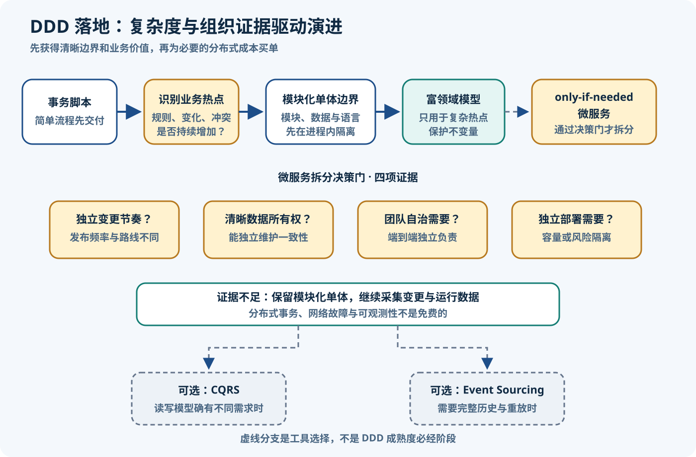

DDD 落地演进与常见误区
整理日期与资料检索日期：2026-08-11。目标：不把 DDD 当作一次性架构改造，而是从业务证据出发，逐步验证语言、模型、模块、部署与一致性选择。
核心结论
- 选择性采用：DDD 的协作、语言维护和建模都有成本，只在规则复杂、歧义或变化足以抵偿成本的区域深入；参考数据、简单 CRUD 和固定报表不必套富领域模型。
- 先发现、后分布：先用业务场景发现并测试语言与边界，再考虑拆部署。EventStorming 产出的是候选边界和待验证假设，不是自动生成的服务架构。
- 模块化单体可以是终点：显式模块 API、隐藏内部实现并持续验证依赖的一体化部署，既是边界试验场，也是有效的长期架构；它不是“失败的微服务”。
- 概念不互相定义：Bounded Context、微服务、团队、代码仓库和数据库可以为了自治而对齐，但任何一个都不是另一个的定义，也不要求一一对应。
- 高级模式不是勋章：CQRS、Event Sourcing、Saga 与 Transactional Outbox 分别回应读写分歧、历史重建、跨边界长事务与可靠消息等具体作用力；它们不是 DDD 成熟度等级。
Eric Evans 的 DDD Reference把战略边界与战术模型放在一套语言中，却没有把 DDD 定义成微服务方法；Fowler 的微服务权衡则明确列出分布、最终一致性和运维复杂度这一“微服务溢价”。Java、Spring Boot 或 Spring Modulith 只用于承载和验证工程决策，不是 DDD 的定义来源。
先判断是否值得
不要到处使用 DDD。第一次评估不是“要几个聚合”，而是“这里的业务认知成本是否超过了模型维护成本”。工作坊会占用领域专家与开发团队时间，术语表、场景、边界和模型也必须随业务持续更新；若规则只是稳定的数据录入，清楚的事务脚本往往更诚实。Fowler 的企业应用模式分别把 Transaction Script描述为每个请求由一个过程组织逻辑，把 Domain Model描述为同时包含行为与数据的领域对象模型，两者是复杂度不同情境下的选择。
| 判断维度 | CRUD / 参考数据 / 固定报表信号 | 核心领域或复杂热点信号 | 建议与验证问题 |
|---|---|---|---|
| 规则复杂度 | 字段校验、简单状态更新 | 规则组合、例外、多步决策和冲突不变量 | 规则能否用短事务脚本清楚表达？若能，先停在这里 |
| 变化频率 | 低频、由技术升级驱动 | 随政策、市场或产品实验持续改变 | 查看近几个月变更原因，不凭未来想象过度设计 |
| 业务歧义 | 字段含义稳定且跨角色一致 | 同词多义、跨角色争论、例外靠口头传递 | 用具体示例校验统一语言能否减少返工 |
| 跨团队协调 | 一个小团队端到端负责 | 多个团队频繁交接，权威数据与决策责任不清 | 先明确模型和契约，不等同于立即拆服务 |
| 监管与审计 | 保留最终状态即可 | 必须解释决策依据、历史状态或审批链 | 先区分审计日志、业务历史与事件溯源 |
| 技术生命周期 | 短期活动、一次性迁移或原型 | 多年演进、规则会累计且人员更替 | 长期认知收益才可能覆盖模型维护成本 |
| 失败代价 | 可人工修正、影响局部 | 资金、库存、合规或客户承诺受损 | 把关键不变量、恢复与审计当作验收条件 |
决策方法：若多数信号在左侧，用清楚的 CRUD、事务脚本和常规分层交付；若规则、语言和失败代价集中在某个业务热点，再把领域专家时间、示例和富模型投向那一小块。不要把“业务重要”误写成“模型复杂”，也不要因为一次工作坊就承诺长期 DDD 投资。
事件风暴
Alberto Brandolini 的 EventStorming 官方站将其描述为跨越部门孤岛、协作探索复杂业务领域的灵活工作坊形式。参与者先用过去时的领域事件讲述“已经发生什么”，再补充触发事件的命令、执行者、政策、外部系统与问题热点，以便让冲突认知和缺失问题快速显形。它可以启发限界上下文，但不会机械决定服务边界。
订单案例：一场紧凑工作坊
- 写明范围或问题：例如“从顾客提交购物车到订单获得可履约承诺”，排除商品运营和末端配送细节。
- 铺橙色事件时间线：
订单已提交、库存已预占、支付已授权、订单已确认；用过去时陈述业务事实，并补正常与失败路径。 - 补命令、执行者、政策与外部系统：
提交订单由顾客发起；“高风险订单需要复核”是政策；支付网关是外部系统。 - 标热点与不变量：例如“支付成功但库存不足时谁承担承诺”“提交时价格能否改变”“重复回调能否再次扣款”。
- 提出候选 Bounded Context：Order、Payment、Inventory、Catalog；圈出语言转义、权威数据、规则内聚与责任交接处。
- 用场景和语言验证：让业务人员走完正常、超时、重复、取消和补偿场景；若每个候选边界能说明自己的事实、决策与契约，才进入工程实验。
颜色边界：橙色事件、蓝色命令、紫色政策等是常见便签约定，方便协作，不是 DDD 强制的语义类型系统。官方 《Introducing EventStorming》页面把方法定位为“有意的集体学习”；因此工作坊输出应是问题、共同理解与假设，而不是把便签数量转换成类、Topic 或服务数量。
远程 / 异步适配、产物与验收
- 同步远程：同一块无限画布、固定缩放和事件命名模板；主持人每 20–30 分钟归纳争议，另设记录员保存决策依据。先静默贴事件，再逐段讲解，避免声音最大的参与者先定模型。
- 跨时区异步：先由小组各自补事件和问题，再安排短会合并；每张异步便签必须注明作者、场景和待答问题，关键分歧必须回到同步对话，不能靠投票抹平语义差异。
- 最低产物：带范围的事件时间线、热点清单、术语与歧义表、候选上下文及责任、关键不变量、跨边界交接、未决问题与负责验证人。
- 验收标准：至少两位不同角色能用同一语言重放一条成功和两条失败路径；每个候选边界写清拥有/不拥有的事实；热点关联真实例子；所有结论标注“已验证”或“待验证”。
模块化单体
模块化单体是在一个可部署进程中组织多个可独立理解的业务模块：模块公开少量明确 API 或事件，内部类型与实现对其他模块隐藏。它保留了适当范围内的本地事务、简单部署与调试，同时让语言、数据责任和依赖方向可测试。它可以长期稳定运行，也可以作为未来拆分的证据场；两种结果都成功。
Fowler指出单体完全可以拥有坚固模块边界，只是需要纪律；微服务以分布式成本强化边界，却不保证边界正确。模块化单体的风险则是共享数据库捷径、循环模块依赖、内部类型泄漏和“只分包不设规则”：如果任意 Repository 都能写任意表、跨模块直接 import internal 类型，包名只是在假装隔离。
Java / Spring：context-first 模块示例
com.example.shop/
order/
OrderFacade.java // 对其他模块公开的同步契约
OrderSubmitted.java // 明确的应用事件契约
internal/ // 聚合、用例、仓储实现
payment/
PaymentFacade.java
internal/
inventory/
InventoryFacade.java
internal/
catalog/
CatalogQueries.java
internal/| 边界规则 | 订单系统做法 | 验证方式 | 失败信号 |
|---|---|---|---|
| 数据由模块拥有 | Order 写订单表，Payment 写支付尝试；可行时使用独立 schema | 数据库权限、Repository 所属和变更评审 | Order 直接更新 Payment 表 |
| 内部实现隐藏 | 其他模块只能依赖 OrderFacade 或公共事件 | Java 包可见性、JPMS/ArchUnit 或模块验证 | 跨模块 import 聚合、JPA 实体或内部 DTO |
| 交互契约显式 | 即时决策用同步 API；解耦后续动作可用进程内事件 | 契约测试、事件场景测试和调用图审查 | 通过任意 Bean、共享工具类或 SQL 隐式协作 |
| 事务边界有文档 | 提交订单的本地不变量在 Order 事务内；跨模块结果显式标 Pending | 失败注入、回滚测试、状态机与运行手册 | 默认所有模块必须处于同一超大事务 |
| 依赖无环 | Order 不反向依赖消费其事件的 Inventory | 每次构建检查模块图 | Order ↔ Inventory 循环调用或共享内部模型 |
工具说明：Spring Modulith 官方基础文档把应用模块表述为公开 API、隐藏内部组件与所需接口；结构验证文档可检查模块无环、只能通过 API 包访问，以及可选的允许依赖清单；事件文档提供模块监听器、事务事件发布记录与失败后重发等工程支持。它们是 Spring Boot 项目的可选工具能力，不是 DDD 必需品，也不意味着模块将来必须变成服务；事件发布记录也不会自动把内部领域事实变成合格的外部集成契约。普通 ArchUnit、编译模块、数据库权限、消息组件和代码评审同样可以实现相应约束。
微服务边界
抽取服务应回答“为什么必须独立运行”，而不是“它能不能画成一个框”。较可信的证据包括：模型按不同原因独立变化；写入权和数据所有权清楚；有能端到端负责的自治团队；容量、可靠性、安全隔离或发布节奏确实不同；收益高于构建、运维、延迟和一致性成本。Microsoft 的微服务边界指南从领域模型出发，同时要求把一致性需求纳入边界判断，而不是把一个 Bounded Context 机械变成一个服务。
反向信号：若拆分后需要大量聊天式同步调用、所有权仍不清、多个服务共同写一个 schema、团队仍期待跨服务 ACID 大事务，或小团队缺乏自动部署、追踪和事件运维能力，就先留在模块化单体修边界。Azure Architecture Center 的微服务架构指南同样列出网络延迟、数据一致性、版本管理与 DevOps 成熟度问题。
| 维度 | 模块化单体 | 微服务 | 选择提示 |
|---|---|---|---|
| 部署 | 整体部署，模块逻辑独立 | 服务可独立部署和回滚 | 只有独立发布收益持续存在才支付拆分成本 |
| 事务 | 可在明确边界内使用本地 ACID | 服务内本地事务，跨服务通常需异步协调 | 强烈渴望跨服务 ACID 常表示边界未成熟 |
| 数据所有权 | 逻辑所有权；物理库可共用但写入受控 | 服务拥有其数据并通过契约开放 | 先证明写入权，再做物理拆库 |
| 故障模式 | 进程故障影响面较集中，调用为本地 | 网络、超时、重试、乱序、部分失败成为日常 | 容量隔离收益必须覆盖分布式失败成本 |
| 可观测性 | 单进程日志、指标和追踪较简单 | 需要跨服务关联、消息追踪与 SLO | 没有端到端观测就不能安全抽取 |
| 测试 | 模块测试加少量整体集成测试 | 契约、组件、韧性和端到端测试组合 | 测试面与环境成本显著增大 |
| 发布协调 | 代码同批发布，模块契约可先演练兼容 | 契约必须向前/向后兼容，消费者独立升级 | 若仍需全体同时发布，自治收益尚未实现 |
| 团队拓扑 | 一个或少量团队共享部署治理 | 自治团队拥有构建、运行和数据全生命周期 | 代码框不能创造团队自治 |
| 成本 | 运维和本地开发成本低，纪律成本较高 | 平台、网络、数据同步和故障处理成本高 | 按实际瓶颈算账，不按流行度决策 |
可回退的抽取顺序
- 先证明模块边界：持续一段时间无内部类型泄漏、无循环依赖，并能独立理解和测试。
- 定义契约与数据所有权：明确谁能写、公开哪些同步 API/版本化消息、兼容窗口和负责人。
- 去除内部调用：把对类、表和事务的隐式依赖替换为模块 API，测量调用粒度与失败语义。
- 必要时复制或翻译读数据：只为延迟、自治或可用性需求建立局部投影，记录新鲜度和对账策略。
- 建立可靠发布：在同一事务记录业务状态与 Outbox 意图；中继可能重复，消费者按消息 ID 幂等。
- 先补可观测性与 SLO：追踪 ID、延迟、错误预算、队列积压、告警和运行手册在拆部署前可用。
- 再抽取部署：逐步切流，保留旧路径或开关；验证容量、自治或风险隔离目标是否出现。
- 执行回滚 / 退出计划：规定何时合回模块、怎样回放消息、迁移数据和停止双写，不让“已经拆了”成为理由。
Fowler 站点的单体渐进拆分指南建议按业务能力和频繁变化区域逐步解耦，并让每一步都是可验证的架构改进；这比按现有规范化数据表创建小服务更能避免“分布式泥球”。
CQRS 与一致性
下面五项要分别决策。CQRS只要求命令模型与查询模型分离，只有当写入规则与读取形态显著分歧时才可能收益；它不要求 Event Sourcing、消息系统或两个物理数据库。Fowler 的 CQRS 说明提醒它对多数系统会增加有风险的复杂度；Microsoft CQRS 模式明确给出读写模型共享同一数据存储的基础实现。
最终一致性意味着跨聚合或上下文的状态在一个可定义窗口内可能不同。界面必须展示 PENDING_RESERVATION、PAYMENT_REVIEW 等真实中间态，给出可重试、超时、人工处理与对账路径。强一致性在单个聚合内部、最终一致性跨上下文是常用启发式，不是无例外定律；失败代价、并发与业务承诺决定具体取舍。
| 模式 / 策略 | 触发证据 | 主要收益 | 成本 | 前置条件 | 不要选择时 |
|---|---|---|---|---|---|
| CQRS | 复杂写模型与多样、高吞吐或专用查询持续冲突 | 读写各自优化，任务式命令语义清楚 | 模型映射、同步和测试面增加 | 明确命令语义、投影新鲜度与失败处理 | 普通 CRUD；只是想把方法名分成 get/save |
| 最终一致性 | 跨自治数据所有者，无法或不值得全局锁定 | 减少协调，提升可用性与自治 | 陈旧读、乱序、重试和对账复杂度 | 可见中间态、可接受延迟、幂等和修复流程 | 业务承诺绝不能容忍短暂分歧且没有补救办法 |
| Transactional Outbox | 同一业务提交必须可靠地产生外发消息，不能双写 | 业务状态与消息意图原子持久化，随后中继 | Outbox 清理、积压、重复投递和监控 | 本地事务、稳定消息 ID、幂等消费者 | 没有外发消息；误以为它保证端到端 exactly-once |
| Saga / Process Manager | 长时间业务流程跨多个独立上下文，需要协调结果 | 以本地事务和显式补偿推进跨边界流程 | 缺少隔离、补偿困难、状态与故障路径增多 | 参与者所有权、步骤状态、超时、幂等与补偿语义 | 其实可以收进一个合理聚合；用 Saga 掩盖错误边界 |
| Event Sourcing | 业务需要把完整决策历史作为事实源，并能重放/重建 | 历史可追溯、可重建投影、保留业务意图 | 事件版本、迁移、重放性能、投影、隐私和运维成本 | 稳定事件语义、并发控制、快照/重建和数据治理方案 | 只要审计表或集成消息日志；简单 CRUD；团队无事件运维经验 |
五项模式的准确边界
- Outbox：Chris Richardson 的 Transactional Outbox要求把业务实体变化与待发送消息写入同一本地事务，再由独立中继发布。中继可能在“发出后、记录完成前”崩溃并重发，所以这是常见的 at-least-once 语境，消费者必须幂等；不能承诺端到端 exactly-once。
- Saga / Process Manager：Richardson 的 Saga 模式把跨服务业务事务组织为一系列本地事务，可用事件编舞或编排器协调，失败时执行显式补偿。补偿是新的业务动作，不是数据库自动回滚；它也不能替代合理的聚合边界。
- Event Sourcing：Fowler 的原始模式说明把应用状态变化保存为事件序列并可由序列重建状态。它不是“保存每条 Kafka 集成消息”，也不等于审计日志；事件存储是所应用区域的事实源。
- 独立选择：可以用 CQRS + 当前状态存储，也可以使用事件溯源而不把每个查询拆成独立服务；Event Sourcing 不是 DDD 必需品。Microsoft 的 Event Sourcing 模式指南明确提醒，事件版本/坏历史迁移、长流重建、幂等投影和不可变事件中的个人数据删除都需要提前设计。
- 事件边界：领域事件是模型内部对已发生业务事实的表达；跨上下文发布前，应由拥有者翻译为稳定、版本化的集成消息。两者可能相关但不是同一对象，外部契约不应直接序列化内部聚合类型。
常见误区
| 症状 | 后果 | 纠正动作 |
|---|---|---|
| 复杂规则全部放在应用 Service，领域对象只有 getter/setter | 形成 Anemic Domain Model，行为与状态分离，不变量散落 | 把属于一个模型的决策和状态转换移回实体、值对象或领域服务；简单 CRUD 不必伪装富模型 |
| DDD everywhere，为所有 CRUD 建工厂、仓储、聚合和事件 | 样板、工作坊与模型维护成本压过业务价值 | 按规则复杂度和变化热点选择性投入；简单处保留事务脚本 |
| 一张表一个聚合 | 数据库结构替代一致性分析，业务操作跨多个“聚合” | 从必须同步守护的不变量和并发边界反推聚合 |
| 巨型聚合，跨所有关联对象做强事务 | 锁竞争、加载成本和多人修改冲突增大 | 缩小真实一致性边界，通过 ID 协作；跨边界一致性按业务代价设计 |
| Bounded Context = 微服务 | 未经验证的模型边界被网络和部署固化 | 先在模块化单体验证语言、责任与依赖；部署是下一层决策 |
| 每个数据库表 / 实体一个服务 | 聊天式调用、分布式事务和低业务内聚 | 围绕完整业务能力、数据所有权和独立变化设计粗粒度边界 |
| 多个上下文直接写共享表 | 绕过契约和不变量，无法判断权威数据 | 指定唯一写入者；经 API、版本化消息或受控读投影协作 |
| 领域事件直接等于外部消息 | 内部模型演进破坏消费者，隐私和实现细节泄漏 | 领域事实留在模型内；由发布适配器映射为版本化集成契约 |
| CQRS 按定义必须使用两个数据库 | 为简单系统引入复制延迟、消息和运维成本 | 先分读写模型或接口；只有容量和隔离证据充分才物理分存储 |
| Event Sourcing = 保存事件日志 / 审计表 | 既承担永久兼容成本，又无法由事件重建权威状态 | 只有事件序列是事实源并能重建状态才称事件溯源；否则准确命名为审计或集成日志 |
只有 order/payment 包名，没有访问规则 | 内部类型、表和 Bean 继续互穿，边界仅存在于目录 | 用公开 API、包可见性、架构测试、数据权限和无环检查执行边界 |
Manager、Helper、Service 取代业务动词 | 技术词遮蔽责任，统一语言无法进入代码和监控 | 以“提交订单、预占库存、授权支付”等领域动作命名；保留 Service 只表达真正无归属的领域操作或应用编排 |
诊断原则：不要只看类形状，而要从一次真实变更和一次真实故障追踪决策所在、事实所有者、事务边界和语言转义。如果复杂规则可被绕过、一个变更触碰所有模块或出错后没人能解释状态，模型边界还没有成为可执行约束。
演进路线

图的主路从事务脚本开始：简单流程先交付并收集缺陷与变更数据；当规则冲突、术语歧义或高频变化聚集时，识别业务热点；随后先建立模块化单体边界，用模块 API、数据所有权和依赖测试验证；只在复杂热点内用富领域模型保护不变量；只有独立变化、清晰数据所有权、团队自治、容量/可靠性或部署隔离共同提供证据时，才通过微服务决策门。CQRS 与 Event Sourcing 是解决特定问题的侧支，不是升级路线。若事务脚本、模块化单体或富模型已经满足目标，团队应当停下并持续维护，而不是为“成熟度”继续拆分。
八周 / 四个 Sprint 实践计划
| 阶段 | 目标 | 活动 | 产物 | 验证 | 退出 / 停止条件 |
|---|---|---|---|---|---|
| 第 1–2 周：基线与发现 | 确认是否存在值得投入的业务热点 | 收集规则缺陷和变更样本；订单 EventStorming；访谈客服、运营、财务和开发 | 事件时间线、热点、术语歧义、候选边界、指标基线 | 失败场景可重放；业务与技术角色同意事实与未决项 | 若仅为稳定 CRUD，保留事务脚本，补测试和文档后停止 |
| 第 3–4 周：模块边界 | 在一个部署单元内建立可执行边界 | 按 Order/Payment/Inventory/Catalog 重组；明确 API、数据所有者与事务；阻断内部访问 | 模块地图、依赖规则、契约测试、事务说明 | 构建中无非法依赖和环；一次业务变更大多局限单模块 | 若交付和运行目标已达成，长期保持模块化单体 |
| 第 5–6 周：热点建模 | 只在订单复杂规则处提高模型表达力 | 以真实示例提炼聚合、不变量、值对象、领域事件；把复杂决策从应用服务移入模型 | 可执行示例、Order 聚合测试、术语表和模型决策记录 | 历史规则缺陷被自动化场景覆盖；新规则修改范围下降 | 若富模型已稳定解决问题，保留单体部署并停止 |
| 第 7–8 周：分布决策实验 | 验证而非预设服务抽取收益 | 选一个独立变化模块做契约/数据所有权演练；测聊天调用；设计 Outbox、幂等、SLO 和回滚 | 决策记录、负载与故障实验、切流/回滚方案 | 独立发布或隔离收益可测，故障与对账可操作 | 证据不足则不拆；证据充分才进入单独的渐进抽取项目 |
用结果证据管理演进
- 规则缺陷：按业务规则类别统计生产缺陷与逃逸测试，关注热点是否下降。
- 变更交付时间：从规则澄清到上线的 lead time，以及一次变更触及的模块和团队。
- 模块依赖违规：非法内部 import、跨模块写表与依赖环的构建失败数和存量。
- 跨团队交接：一次能力交付需要等待的团队数、契约协调次数与阻塞时长。
- 事故影响范围：一次模块/服务故障波及的业务能力、恢复时长与是否能局部降级。
- 异步可靠性：Outbox 最老未发布记录的 lag、积压量、消费者重复率、幂等拒绝数与对账差异。
不要用“聚合数量、领域事件数量、模块数量、服务数量”当成熟度指标。它们只记录结构规模，不能证明缺陷更少、交付更快或事故更小。
练习与验收
订单系统现代化练习
现状症状：一个 OrderManager 同时查商品、改库存、发起支付和写通知；四个团队可以直接更新 orders 与 payment 表；提交订单常因价格、库存和支付状态含义不同返工；生产上存在“支付成功但订单仍待支付”和重复回调重复扣减的缺陷。部署仍是一个 Spring Boot 应用，团队计划直接拆 20 个实体服务。
- 选“提交订单至获得确认”范围，画成功、库存不足、支付超时、重复回调和取消五条事件时间线；记录术语争议和失败代价。
- 把“成交价能否改变、同一订单能否重复授权、库存预占何时释放”标为热点；分别确认规则权威人和必须同步成立的范围。
- 提出模块地图：Order拥有订单状态和成交快照，Payment拥有支付尝试与渠道结果，Inventory拥有预占/释放，Catalog拥有展示资料；Notification 先作为简单通用能力。
- 在单体内先约束 API、内部包和表写入权；Order 提交在本地事务内守住聚合不变量，Payment/Inventory 结果通过显式应用事件协作，界面展示处理中状态。
- 可选抽取决策：只有当 Payment 确有独立合规发布、敏感数据隔离、独立团队与可用性目标，并已消除共享写和细粒度调用，才试抽 Payment；否则继续作为模块。
- 若抽取，业务状态与 Outbox 意图同事务写入，消费者按事件 ID 幂等；观测 Outbox lag、重复率、状态停留时间，准备切回模块 API 的退出路径。
验收评分规准
| 维度 | 达到验收 | 需要返工 |
|---|---|---|
| 业务发现 | 范围、五类场景、热点、参与者与未决问题齐全，事实用过去时表达 | 只有理想主流程或直接从便签数得出服务数 |
| 语言与边界 | 四模块拥有/不拥有的事实清楚，跨界翻译和权威写入者明确 | Bounded Context、团队、库和服务被画成自动一一对应 |
| 一致性 | Order 内强约束与跨模块处理中状态、超时、补偿、对账分别写明 | 要求一个跨所有模块的强事务，或只说“最终会一致” |
| 工程约束 | 非法内部依赖、共享写和依赖环能在构建或权限层失败 | 只有包命名与架构图，没有可执行检查 |
| 抽取证据 | Payment 独立变化、团队、数据、安全/SLO 证据和成本收益可复核 | 理由只是“微服务更先进”或“一张表一个服务” |
| 可靠性 | Outbox 至少一次、幂等、监控、对账、故障注入与回滚都有验收 | 宣称 exactly-once，忽略重复、乱序与中继积压 |
Java / Spring 团队 90 天下一步
- 第 1–15 天：导出近三个月规则缺陷、变更 lead time、跨团队等待与事故数据，选一个订单热点。
- 第 1–15 天：完成一场 EventStorming，逐项标注已验证、待验证、负责人和期限。
- 第 16–30 天：建立 Order/Payment/Inventory/Catalog 模块地图、公开 API 和数据写入所有权。
- 第 16–30 天：在 CI 加入无环与内部包访问检查；可选评估 Spring Modulith，不把它设为 DDD 前提。
- 第 31–45 天：用真实失败场景补 Order 聚合和应用用例测试，记录事务边界。
- 第 46–60 天：消除一个跨模块直接写表和一条内部类型依赖，测量变更影响面。
- 第 61–75 天：若确有可靠外发需求，做 Outbox + 幂等消费者故障实验，建立 lag 与重复率告警。
- 第 76–90 天：基于指标召开架构复盘；明确“停在事务脚本 / 模块化单体 / 富模型”或“启动单模块抽取实验”，并写退出条件。
本篇小结
DDD 落地的主线不是增加模式，而是减少业务误解：先判断复杂度是否值得投入，再以协作发现提出语言与边界假设，在模块化单体中把它们变成可执行规则，只在局部热点使用富模型。微服务、CQRS、Outbox、Saga 与 Event Sourcing 必须分别由独立部署、读写分歧、可靠投递、长流程协调或历史重建等证据触发。一个团队如果在事务脚本、模块化单体或富领域模型阶段已经得到更低缺陷、更快变更和可控故障，就已经完成了这轮演进。
参考资料
资料检索于 2026-08-11。以下优先采用方法作者、模式作者与官方工程文档；正文均为自行归纳，未将厂商宣传作为采用微服务的证据。
- Alberto Brandolini：EventStorming 官方站 — 协作探索复杂业务领域的工作坊定位与使用场景。
- Alberto Brandolini：Introducing EventStorming — 方法起源、集体学习目标与官方书籍入口。
- Eric Evans / Domain Language：DDD Reference — 战略边界、统一语言、聚合与领域事件的原始模式摘要。
- Martin Fowler：Transaction Script — 简单业务逻辑的过程式组织方式。
- Martin Fowler：Domain Model — 同时承载行为与数据的复杂领域模型。
- Martin Fowler：Microservice Trade-Offs — 模块边界、分布、最终一致性与运维成本的权衡。
- Zhamak Dehghani / Martin Fowler：How to break a Monolith into Microservices — 按业务能力、变化与原子步骤渐进抽取。
- Martin Fowler：CQRS — 读写使用不同模型及其适用范围与复杂度警告。
- Martin Fowler：Event Sourcing — 用事件序列记录状态变化并重建应用状态。
- Martin Fowler：Anemic Domain Model — 复杂规则离开模型后退化为事务脚本的反模式。
- Microsoft Learn：Identify microservice boundaries — 领域边界、聚合与一致性对服务边界的约束。
- Microsoft Learn：CQRS Pattern — 共享存储与独立存储实现、最终一致性及复杂度。
- Microsoft Learn：Event Sourcing Pattern — 事件版本、重建、幂等、迁移与个人数据治理。
- Spring Modulith：Fundamentals — Spring Boot 逻辑模块、公开接口与内部实现的工具化表达。
- Spring Modulith：Verifying Application Module Structure — 无环、API-only 访问与允许依赖检查。
- Spring Modulith：Working with Application Events — 模块事件监听、事务发布记录、失败恢复与测试支持。
- Chris Richardson：Transactional Outbox — 状态与消息意图原子记录、独立中继及重复投递。
- Chris Richardson：Saga — 跨服务本地事务序列、编舞/编排与补偿。
DDD 七篇专题导航
- DDD 架构总览与学习路线
- DDD 基础概念与统一语言
- DDD 战略设计与限界上下文
- DDD 战术设计与领域模型
- DDD 分层架构模式对比
- DDD 订单领域 Java 实践
- DDD 落地演进与常见误区（本篇）